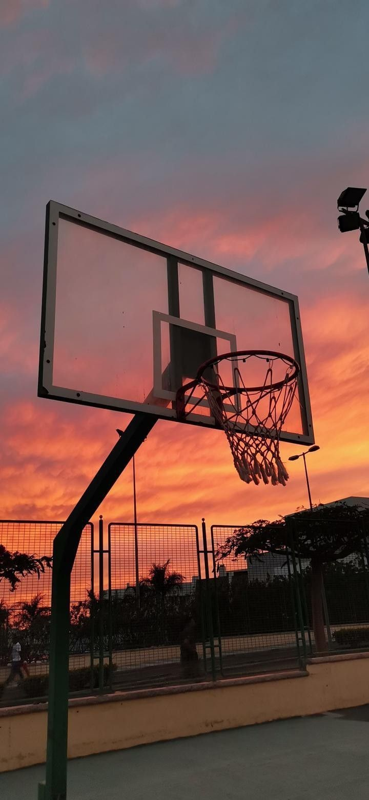

Generalidades

El objetivo principal es marcar más puntos que el equipo contrario. Para ello, los jugadores deben intentar lanzar la pelota dentro del aro del rival. Un tiro exitoso desde dentro de la línea de 3 puntos otorga 2 puntos, mientras que uno desde fuera de esta línea da 3 puntos. Los tiros libres, que se realizan desde la línea de tiro libre tras ciertas faltas, valen 1 punto. Un partido de baloncesto se juega en cuatro cuartos de 10 (internacional) o 12 minutos (NBA) cada uno. Si el marcador está empatado al final del tiempo reglamentario, se juega una prórroga para determinar al ganador.